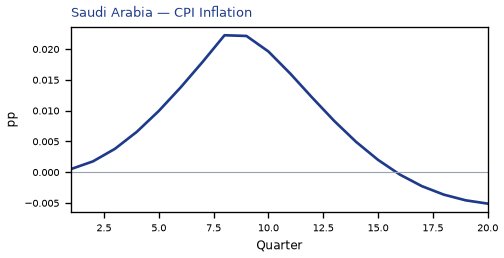
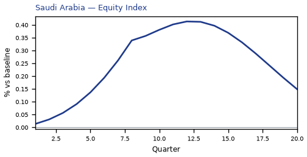
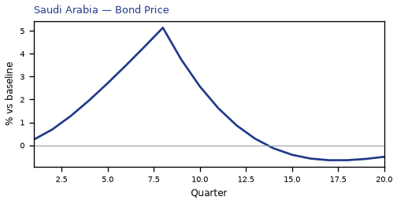
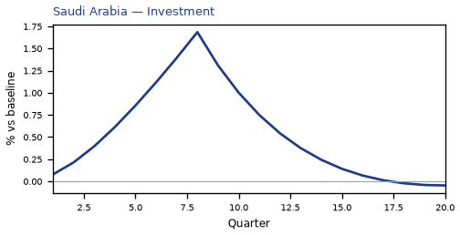
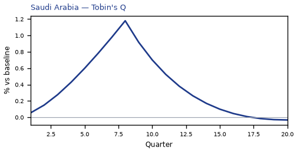
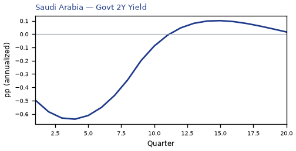
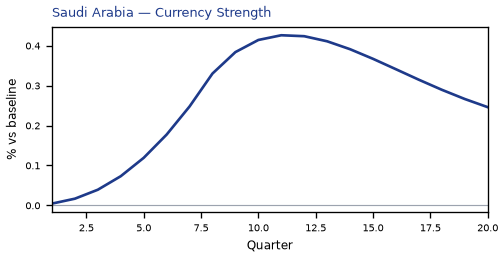
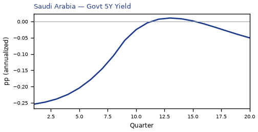
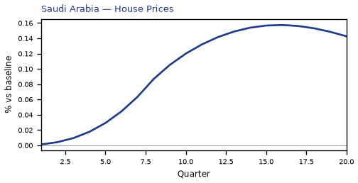
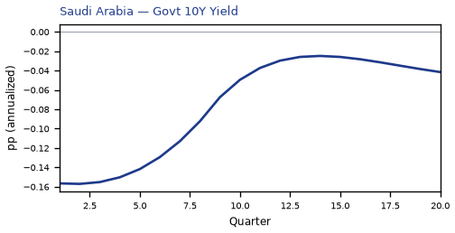

SA — Saudi Arabia
**Saudi Arabia — US policy rate −200bp**
The main impact of a 200 basis-point (2.00 percentage-point) cut in United States interest rates on Saudi Arabia is a modest positive spillover: real GDP rises to about 0.10% above baseline by the 13th quarter. This is a small, slow-building gain rather than a large hit, consistent with the "modest" band and the country's third-place ranking by absolute GDP response. The shock is a US monetary easing, and the Saudi economy is a partial beneficiary through easier global financial conditions and a weaker dollar, not a dramatic boom.
**Demand and trade.** Household consumption strengthens gradually, peaking at roughly 0.06% above baseline in Q8 before dipping briefly below baseline around Q10 and then recovering to about 0.03% by Q20. Private investment is the strongest domestic demand response, rising to about 1.69% above baseline at Q8, then fading and turning slightly negative by Q18–Q20. Net exports — the trade balance, since this model does not split imports from exports — improve steadily, peaking near 0.14% above baseline at Q12 and remaining positive at about 0.04% by Q20. Government spending moves very little, peaking at only about 0.02% above baseline at Q11 and ending marginally below baseline. Government debt drifts up throughout, reaching about 0.14% above baseline by Q20.
**External / FX.** The real exchange rate rises, which is a real depreciation — a weaker, more competitive home currency — peaking at about 0.43% above baseline in Q11 and still about 0.25% above baseline at Q20. This real depreciation is the main external channel supporting the trade balance: the improvement in net exports lines up with the weaker currency, and the two move together through the middle of the horizon. There is no separate import/export split to appeal to here; the model gives only the net trade balance.
**Labour.** Employment rises slowly, reaching about 0.09% above baseline around Q17 and remaining near 0.08% at Q20. Unemployment falls correspondingly, reaching about −0.04 percentage points below baseline at Q16 and still about −0.03pp at Q20. Real wages climb steadily throughout, ending about 0.13% above baseline at Q20 — the largest labour-market gain in the path.
**Prices.** CPI inflation picks up modestly, peaking at about 0.02 percentage points above baseline in Q8, then fading and turning slightly negative after Q16, ending about −0.01pp at Q20. Domestic inflation follows a similar but smaller arc, peaking near 0.02pp at Q8 and turning negative after Q16. Firms' marginal cost rises to about 0.06% above baseline at Q13 and remains about 0.03% above baseline at Q20.
**Financial conditions.** The local policy rate falls in sympathy with the US cut, reaching about −1.03 percentage points at Q8, then returning toward baseline and turning slightly positive after Q14. Government bond prices rise sharply, peaking about 5.14% above baseline at Q8 before fading and turning slightly negative after Q14. Yields move the other way: the 2-year government yield falls to about −0.64pp at Q4, the 5-year yield to about −0.25pp at Q1, and the 10-year yield to about −0.16pp at Q2, all drifting back toward baseline later. Equity prices rise to about 0.41% above baseline at Q12 and remain about 0.15% above baseline at Q20. Tobin's Q — the value of installed capital — peaks near 1.18% above baseline at Q8, then fades and turns slightly negative by Q18. House prices rise steadily to about 0.16% above baseline at Q16 and stay near 0.14% at Q20. Bank credit supply barely moves, peaking at roughly 0.001% above baseline, and the lending spread is flat at zero throughout.
**Sectoral and capital.** Services GDP rises to about 0.04% above baseline at Q13 and remains about 0.02% above baseline at Q20. Manufacturing GDP is the exception: it falls to about −0.12% below baseline at Q11 and is still about −0.07% below baseline at Q20. The capital stock builds slowly, reaching about 0.05% above baseline around Q17 and holding near that level.
**Timing.** The GDP gain is largest around Q13, at roughly 0.10% above baseline, and it has not fully faded by Q20 — it is still about 0.04% above baseline. The equity and investment responses peak earlier, around Q8–Q12, while employment, real wages, house prices, and the capital stock keep building into the later quarters.
**Close.** These are model impulse responses to a US rate cut relative to baseline, not forecasts. They describe how the Saudi economy's variables deviate from their no-shock path under the model's estimated transmission, and should be read as conditional, model-implied deviations rather than predictions.












source=live · global_macro_v5 · contract v6 · Q1–Q20 JSON · not financial advice